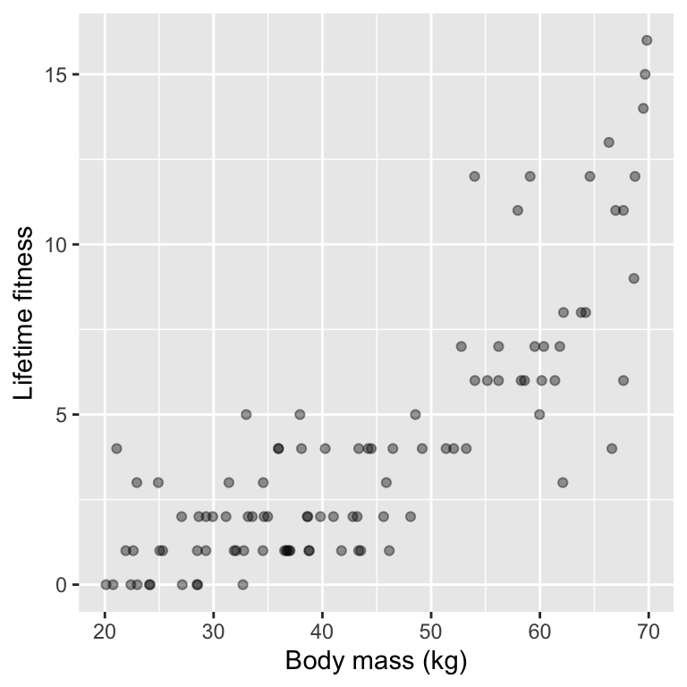
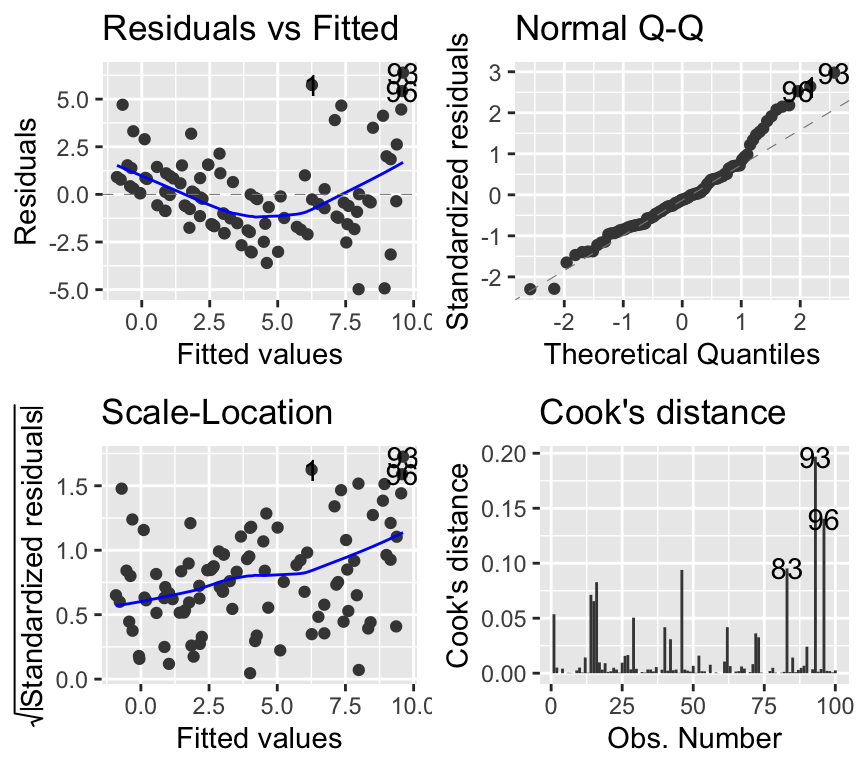
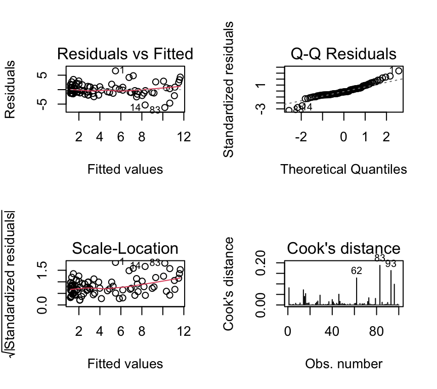
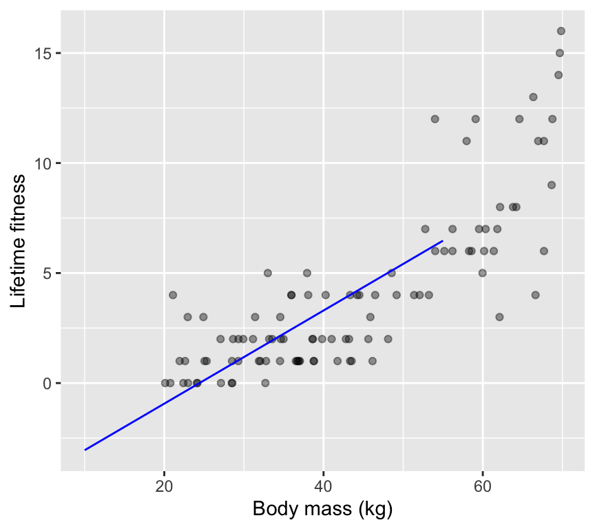
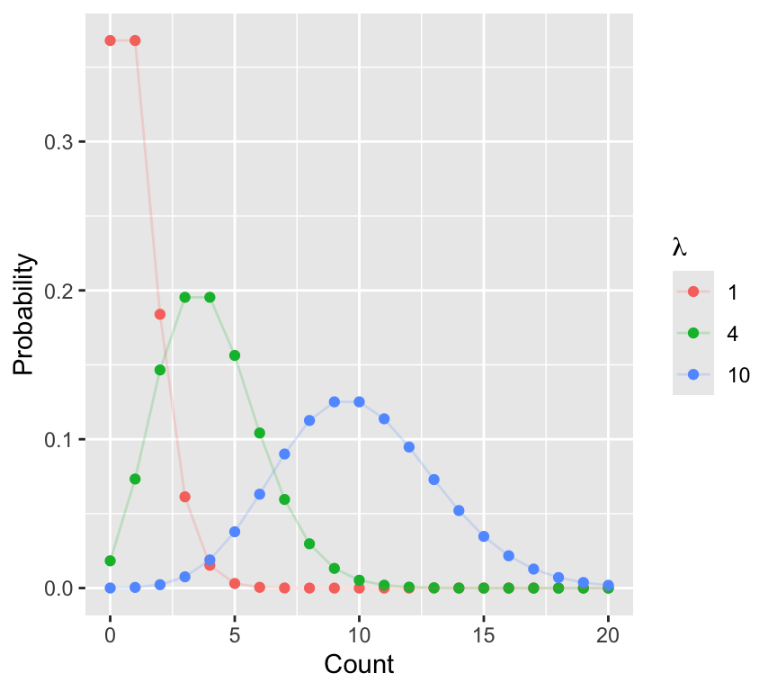
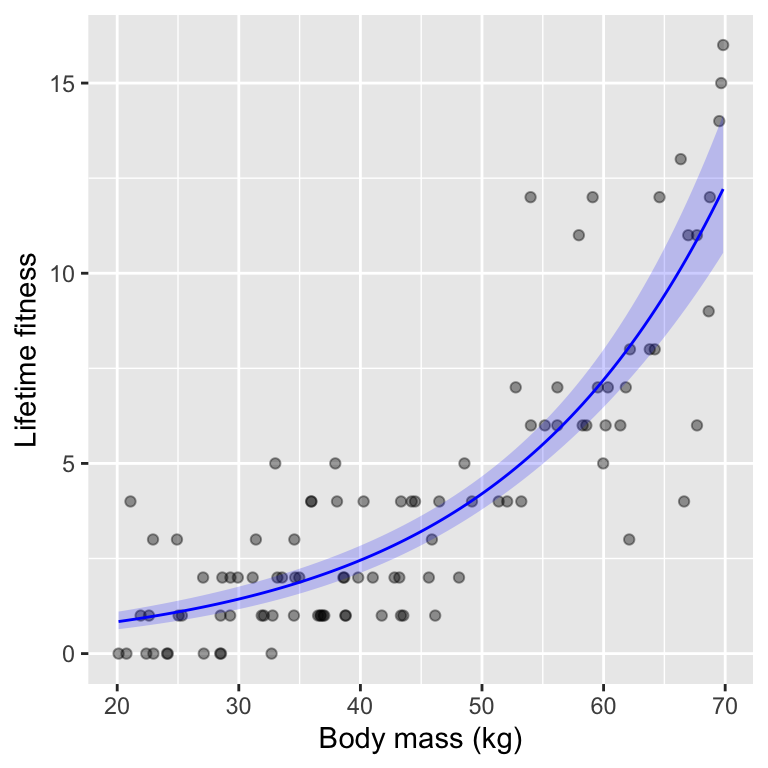
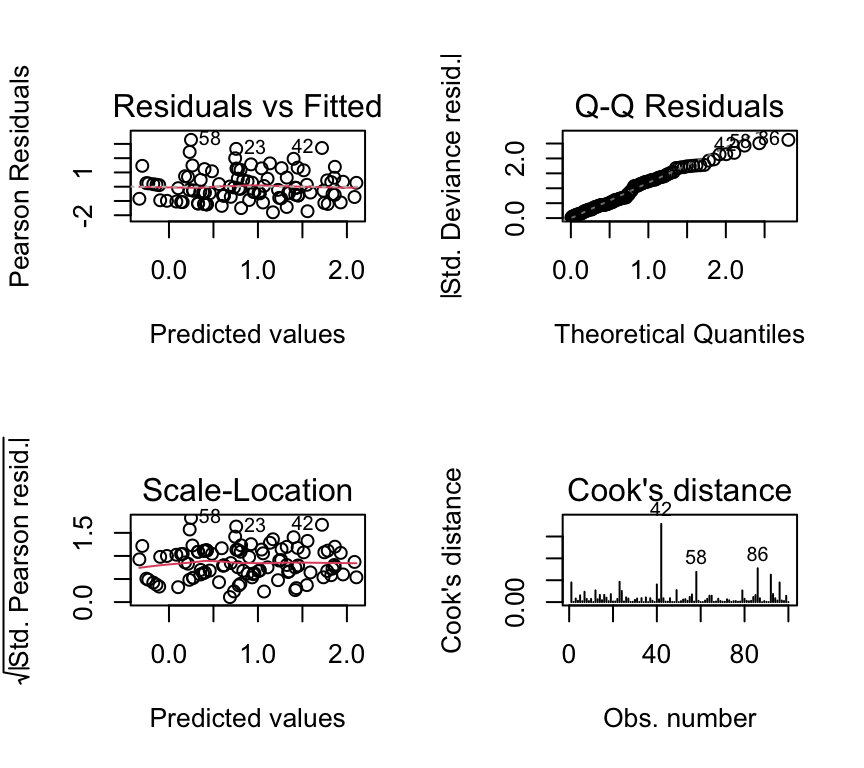

soay <- read.csv("datasets/soay_sheep.csv")Count data (L8)
In all the previous chapters, we have focused on linear models for continuous response variables. However, many biological response variables are counts (e.g., number of offspring, number of parasites). In this chapter, we introduce Generalized Linear Models (GLMs) for analysing count data, focusing on the Poisson distribution.
Introduction
So far in BIO144, we have focused on linear models fitted using lm(). These models assume:
- A continuous response variable
- Normally distributed residuals
- Constant variance (homoscedasticity)
Linear models are powerful, but these assumptions are often violated in biological data.
In this chapter we move beyond normal linear models to handle an important new type of response variable: counts.
We introduce Generalized Linear Models (GLMs), which extend linear models by allowing the response variable to follow distributions other than the normal distribution.
By the end of this chapter, you should be able to:
- Recognise when linear regression is inappropriate
- Understand the core components of a GLM
- Fit and interpret Poisson regression models
- Diagnose common problems such as overdispersion and zero inflation
Think–Pair–Share (#tps-non-neg-kinds) What kinds of biological outcomes (response variables) can you think of that cannot be negative or continuous?
From LM to GLM
Linear models (LM) describe the mean of a response variable as a linear function of explanatory variables. For example:
\(y_i = \beta_0 + \beta_1 x_i^{(1)} + \cdots + \beta_p x_i^{(p)} + \epsilon_i\)
where the error term \(\epsilon_i\) is normally distributed with mean 0 and constant variance. That is:
\(\epsilon_i \sim N(0, \sigma^2)\).
This works well when the response variable is continuous and approximately normally distributed.
However, many biological response variables are:
- Counts (e.g. offspring, parasites, species)
- Binary responses (e.g. alive/dead)
- Proportions
In these cases, forcing the data into a linear model often leads to invalid predictions and misleading inference.
Generalized Linear Models (GLMs) solve this problem by:
- Keeping the familiar linear predictor, but
- Allowing different distributions for the response, and
- Linking the predictor to the mean response using a link function.
Important
Key idea
GLMs are not a replacement for linear models — they are a generalisation of them. Linear regression is a special case of a GLM.
Think–Pair–Share (#tps-which-reg-assump) Which assumption of linear regression do you think is most problematic for count data?
Count data
Count data occur frequently in biology and medicine. Typical examples include:
- Numbers of animals, plants, or species
- Numbers of offspring
- Numbers of pathological structures (e.g. polyps)
Count data have four key properties:
- They are discrete
- They are non-negative
- Their variance often increases with the mean
- There is no known upper limit to the count.
These properties immediately suggest that standard linear regression may be inappropriate.
Think–Pair–Share (#tps-which-props-viol) Which of these properties is violated if we use a normal distribution for counts?
Example: Soay sheep
A feral population of Soay sheep on the island of Hirta (Scotland) has been studied extensively. Ecologists were interested in whether the body mass of female sheep influences their fitness, measured as lifetime reproductive success (number of offspring produced over a lifetime).
Question: Are heavier females fitter than lighter females?
Read in an example dataset:
Here are the first few rows of the dataset:
head(soay) body.size fitness
1 53.99529 12
2 32.69467 0
3 33.55580 2
4 43.20078 2
5 43.34102 4
6 59.52711 7As always, we start by exploring the data visually:

Think–Pair–Share (#tps-what-suspicious) What features of this plot might already make you suspicious about using linear regression?
The wrong analysis
A common mistake is to analyse count data using linear regression, treating counts as if they were continuous.
mod_soay_lm <- lm(fitness ~ body.size, data = soay)The model checking plots show clear violations of linear regression assumptions:
par(mfrow = c(2, 2))
plot(mod_soay_lm, which = 1:4, add.smooth = TRUE)
The qq-plot looks fine. The scale-location plot shows that variance increases with fitted values, violating homoscedasticity. Also, there is a clear non-linear pattern in the residuals vs fitted plot, suggesting that the linear model is not capturing the relationship well.
Adding a quadratic term improves the fit slightly:
mod2_soay_lm <- lm(fitness ~ body.size + I(body.size^2), data = soay)
par(mfrow = c(2, 2))
plot(mod2_soay_lm, which = 1:4, add.smooth = TRUE)
But problems remain: variance increases with fitted values.
Caution
Why this matters
Violating model assumptions can lead to biased estimates, incorrect standard errors, and misleading p-values.
Another issue remains, however: linear regression can predict negative counts, which are impossible. We can see this in a plot of the data and the fitted regression line:

Notice that for small body sizes the fitted line goes below 0 on the y-axis. That is, the moe predicts negative fitness values, which are biologically impossible.
Caution
We have extrapolated beyond the data range here, largely for illustrative purposes. In practice we should be very cautious about extrapolating beyond the range of observed data. This is because the model may not hold outside the observed range, leading to nonsensical predictions.
Why linear regression fails for count data
- The normal distribution is for continuous variables
- It allows negative values
- It assumes constant variance
- Count data are discrete, non-negative, and typically heteroscedastic
Think–Pair–Share (#a_why_poisson) Why is a normal distribution a poor choice for count data? Which assumptions can be expected to fail?
Poisson GLM
To deal with count data, we need a different probability (error) model. A common probability model for counts is the Poisson distribution. The Poisson distribution is often the default starting point for modelling counts because it is the simplest distribution that respects discreteness, non-negativity, and increasing variance.
The Poisson distribution has the following probability mass function:
\(P(Y = y) = \frac{\lambda^y e^{-\lambda}}{y!}\)
where:
- \(y = 0, 1, 2, \ldots\)
- \(\lambda > 0\) is the mean (and variance) of the distribution
Here are a couple of Poisson distributions with different means:

The Poisson distribution has two important properties:
- It is defined only for non-negative integers (0, 1, 2, …)
- The mean and variance are equal.
Important
Mean–variance relationship
In a Poisson distribution, the mean and variance are equal. This captures an important feature of count data, but it will later lead to the concept of overdispersion.
Think–Pair–Share (#a_mean_variance_link) Why does increasing variance with the mean cause problems for linear regression?
Generalized Linear Models (GLMs)
GLMs extend linear models by combining three components:
- Linear predictor.
- Link function.
- Probability distribution (family).
Note
If you choose a normal family and an identity link, a GLM is mathematically identical to the linear model you fit using lm().
The linear predictor
The linear predictor is the same as in linear regression:
\(\eta_i = \beta_0 + \beta_1 x_i^{(1)} + \cdots + \beta_p x_i^{(p)}\)
It is just the linear combination of explanatory variables and coefficients. Nothing new here.
The link function
In the linear models we already used (e.g., for linear regression) the link function is the identity link:
\(E(y_i) = \eta_i\)
Here, \(E(y_i)\) refers to the expected value (mean) of many hypothetical observations, not the single observed value \(y_i\).
Identity link: the expected value of the response \(E(y_i)\) equals the linear predictor \(\eta_i\).
That is:
\(E(y_i) = \eta_i = \beta_0 + \beta_1 x_i^{(1)} + \cdots + \beta_p x_i^{(p)}\)
For count data, this can lead to negative predictions.
The solution is a different link function. For Poisson regression, the standard choice is the log link. It relates the linear predictor to the expected value of the response as follows:
\(\eta_i = \log(E(y_i))\)
which implies:
\(E(y_i) = \exp(\eta_i) > 0\)
The log link ensures that the expected count is always positive, regardless of the values of the explanatory variables. Whatever the value of the linear predictor \(\eta_i\), the exponential of it \(\exp(\eta_i)\) is always positive.
A good link function enforces the natural constraints of the data.
Think–Pair–Share (#tps-what-wrong-id) What would go wrong if we used an identity link for count data?
The probability distribution (family)
The final component of a GLM is the probability distribution (also called the family). This specifies how the response variable is distributed. In Poisson regression, we assume that the response variable follows a Poisson distribution. Hence, we say we are fitting a Poisson GLM.
Mathematically, a Poisson GLM can be summarised as:
\(y_i \sim \text{Poisson}(\lambda_i)\)
And written out fully with the linear predictor and link function:
\(y_i \sim \text{Poisson}(\lambda_i)\)
where \(\log(\lambda_i) = \beta_0 + \beta_1 x_i^{(1)} + \cdots + \beta_p x_i^{(p)}\)
or equivalently:
\(E(y_i) \sim \text{Poisson}(\exp(\beta_0 + \beta_1 x_i^{(1)} + \cdots + \beta_p x_i^{(p)}))\)
R - Poisson GLM
When fitting a Poisson GLM in R, we use the glm() function, specifying the family as poisson:
soay_glm <- glm(fitness ~ body.size, data = soay, family = poisson)Specifying family = poisson tells R to use the Poisson distribution with a log link function by default. We could specify the link explicitly as family = poisson(link = "log"), but this is unnecessary since the log link is the default for the Poisson family.
Checking model assumptions
As always, we should check model assumptions:
par(mfrow = c(2, 2))
plot(soay_glm, which = 1:4, add.smooth = TRUE)
The QQ-plot is rather concerning. However, QQ-plots in GLMs are not testing normality of residuals in the same way as for linear models, so their interpretation differs. The deviance residuals should approximately follow a normal distribution if the model fits well. Here, there are some deviations from normality, which could be somewhat concerning, but for now we will focus on the other plots. (If you’re interested in what are deviance residuals, please see the Extras section at the end of this chapter.)
The other plots look much better than for the linear model. The residuals vs fitted plot shows no obvious pattern, and the scale-location plot shows more constant variance.
Important
You must specify the family in glm(). If you omit the link function, R uses the default link for that family.
Interpreting coefficients
summary(soay_glm)
Call:
glm(formula = fitness ~ body.size, family = poisson, data = soay)
Coefficients:
Estimate Std. Error z value Pr(>|z|)
(Intercept) -1.253092 0.210186 -5.962 2.49e-09 ***
body.size 0.053781 0.003735 14.400 < 2e-16 ***
---
Signif. codes: 0 '***' 0.001 '**' 0.01 '*' 0.05 '.' 0.1 ' ' 1
(Dispersion parameter for poisson family taken to be 1)
Null deviance: 333.105 on 99 degrees of freedom
Residual deviance: 97.783 on 98 degrees of freedom
AIC: 378.16
Number of Fisher Scoring iterations: 5Coefficients are estimated on the log scale.
Important
A one-unit increase in an explanatory variable multiplies the expected count by \(\exp(\beta)\).
Think–Pair–Share (#tps-what-change-beta) If \(\beta=0.05\) what change in the expected count would be caused by an increase in body mass of 1 kg? As well as a numeric value, specify whether it is used additively or multiplicatively.
To interpret the coefficient for body size (\(\beta_1 = 0.05\)), we exponentiate it: \(\exp(0.05) \approx 1.65\)
This means that for each additional kilogram of body size, the expected count of fitness increases by a factor of approximately 1.65 (i.e., a 65% increase). We use the number multiplicatively because of the log link function.
To make a prediction of the expected count for a given body size, we back-transform the linear predictor:
\(E(y) = \exp(\beta_0 + \beta_1 \times \text{body.size})\)
For example, for a body size of 40 kg:
body_size_example <- 40
linear_predictor <- coef(soay_glm)[1] + coef(soay_glm)[2] * body_size_example
expected_count <- exp(linear_predictor)
expected_count(Intercept)
2.455011
Note
Although counts can only be integers, the expected value from a Poisson model can be any positive real number. This is because the expected value is a mean over many possible counts.
Analysis of deviance
There is something technically different that we have glossed over until now: how model fit is assessed. In linear regression we estimate parameters by minimizing the sum of squared residuals. In GLMs, we use maximum likelihood estimation (MLE). In this course we will not go into the mathematical details of MLE, but the key idea is that we find the parameter values that make the observed data most probable under the assumed model (just like in least squares). Instead of minimising sums of squares, we maximise the likelihood of the data given the model. Maximising the likelihood is equivalent to minimising the deviance, which is a measure of model fit based on likelihoods. Hence, when we fit a GLM in R, we get output including the deviance (and not sums of squares):
anova(soay_glm, test = "Chisq")Analysis of Deviance Table
Model: poisson, link: log
Response: fitness
Terms added sequentially (first to last)
Df Deviance Resid. Df Resid. Dev Pr(>Chi)
NULL 99 333.11
body.size 1 235.32 98 97.78 < 2.2e-16 ***
---
Signif. codes: 0 '***' 0.001 '**' 0.01 '*' 0.05 '.' 0.1 ' ' 1In the output we see the deviance for the null model and the fitted model, as well as the change in deviance when adding explanatory variables. We can use a chi-squared test to assess whether adding explanatory variables significantly improves model fit.
We use a chi-squared test here because, under certain regularity conditions, the change in deviance between nested models follows a chi-squared distribution with degrees of freedom equal to the difference in the number of parameters. If you are interested in what this means, you can read more about it in more advanced statistics textbooks.
You may be wondering if we can calculate an r-squared value for GLMs. While there is no direct equivalent of r-squared for GLMs, several pseudo-r-squared measures have been proposed. However, these are not as widely used or interpreted as r-squared in linear regression. If you’re interested, check out the Extras section at the end of this chapter for more information.
Reporting
When reporting results from a Poisson GLM, we can make a graph and a sentence describing the pattern and related statistics.
When we wish to make a graph of the fitted relationship, we can either make it with the y-axis on the log scale (linear predictor scale) or back-transform to the original count scale. I usually prefer the original scale, as it is easier to interpret.
The first step is to create a new data frame with a sequence of body sizes for prediction, and errors for the 95% confidence intervals:
new_data <- data.frame(body.size = seq(min(soay$body.size), max(soay$body.size), length.out = 100))
predictions <- predict(soay_glm, newdata = new_data, se.fit = TRUE)
new_data$fit <- exp(predictions$fit)
new_data$lower <- exp(predictions$fit - 1.96 * predictions$se.fit)
new_data$upper <- exp(predictions$fit + 1.96 * predictions$se.fit)Note that we back-transform the predictions and confidence intervals using the exponential function, since the link function is the log. And note that we must calculate the confidence intervals on the log scale first, and then back-transform them.
Note
If we only wanted the fitted value (and not confidence intervals) we could have used type = "response" in the predict() function to get predictions on the original count scale (back-transformed from the log scale). When we don’t specified this, we would get predictions on the log scale–this is the default behavior.
Now we can plot the data and the fitted relationship with confidence intervals:

Excellent! We can now write a nice sentence for our results:
Reproductive fitness (in terms of lifetime number of offspring) increased significantly with body mass, with a unit increase in body mass associated with a multiplicative increase in expected fitness of 1.06 (95% CI: 1.05, 1.06; \(\chi^2 =\) 235.32, \(df = 1\), \(p <\) 4.1^{-53}).
Well done!
We have made our first steps into the world of GLMs and Poisson regression for count data. You should now be able to:
- Recognise why linear regression is often inappropriate for count data.
- Understand the components of a GLM: linear predictor, link function, and family.
- Fit a Poisson GLM in R using
glm(). - Interpret coefficients from a Poisson GLM.
Next, we will look at common issues that arise when fitting Poisson models, such as overdispersion and zero inflation.
Overdispersion
In a Poisson model, mean and variance are assumed equal. In practice, variance often exceeds the mean, a phenomenon called overdispersion.
Common causes include:
- Unmeasured explanatory variables. This means important explanatory variables are missing from the model, leading to extra variability.
- Individual heterogeneity. This can arise when individuals differ in ways not captured by measured explanatory variables, leading to extra variability in counts.
- Correlated observations. This can occur when observations are not independent, such as repeated measures on the same individual.
A simple check for overdispersion is to compare the residual deviance to the residual degrees of freedom:
\(\text{Dispersion} = \frac{\text{Residual Deviance}}{\text{Residual DF}}\)
If this ratio is substantially greater than 1 (e.g., > 1.5 or 2), it indicates overdispersion.
Check this for our Soay sheep model:
dispersion_soay <- deviance(soay_glm) / df.residual(soay_glm)
dispersion_soay[1] 0.9977877Here, the dispersion is quite close to 1 (it is 1), indicating little overdispersion. However, in many real datasets, overdispersion is common.
Caution
Ignoring overdispersion leads to anti-conservative p-values (too small). This would be a typical example of Type I error inflation. Type I errors occur when we incorrectly reject a true null hypothesis, leading to false positives. In the context of statistical modeling, ignoring overdispersion can result in underestimating standard errors, which in turn leads to smaller p-values. Consequently, we may conclude that an effect is statistically significant when it is not, thereby increasing the likelihood of Type I errors.
Think–Pair–Share (#tps-why-ind-diff) Why might individuals differ even after accounting for measured explanatory variables?
Quasi-Poisson and negative binomial models
One solution is the quasi-Poisson model, which estimates an additional dispersion parameter:
For this, we can use family = quasipoisson in glm():
soay_quasi <- glm(fitness ~ body.size, data = soay, family = quasipoisson)
summary(soay_quasi)
Call:
glm(formula = fitness ~ body.size, family = quasipoisson, data = soay)
Coefficients:
Estimate Std. Error t value Pr(>|t|)
(Intercept) -1.253092 0.209446 -5.983 3.59e-08 ***
body.size 0.053781 0.003722 14.450 < 2e-16 ***
---
Signif. codes: 0 '***' 0.001 '**' 0.01 '*' 0.05 '.' 0.1 ' ' 1
(Dispersion parameter for quasipoisson family taken to be 0.992977)
Null deviance: 333.105 on 99 degrees of freedom
Residual deviance: 97.783 on 98 degrees of freedom
AIC: NA
Number of Fisher Scoring iterations: 5Think–Pair–Share (#a_overdispersion_consequences) What happens to standard errors and p-values if overdispersion is ignored?
Zero inflation
A special case of overdispersion arises when there are more zeros than expected under a Poisson model. This is called zero inflation.
Examples include:
- Number of cigarettes smoked (many people do not smoke, more than can be modelled by a Poisson distribution)
- Parasite counts (many host individual have no parasites, more than can be modelled by a Poission distribution)
Note
Zero inflation often reflects two processes: whether an observation can be non-zero at all, and how large it is if it is. E.g., whether an individual smokes at all, and then how many cigarettes they smoke if they do.
Think–Pair–Share (#tps-zero-inf-examples) Can you think of an ecological, biological, or medical process that would generate many structural zeros?
In this course we will not describe in detail or practice fitting zero-inflated models, but they are an important tool for count data with many zeros. Examples of models include zero-inflated Poisson (ZIP) and zero-inflated negative binomial (ZINB) models. These models combine a count model (e.g., Poisson or negative binomial) with a separate model for the probability of being a structural zero. There is also a model called the hurdle model, which is similar but has a different interpretation.
Multiple explanatory variables
GLMs can include multiple explanatory variables, just like linear models. And they can include only categorical variables, only continuous variables, or a mix of both.
For example, we could include parasite load as an additional predictor of fitness in the Soay sheep data:
Read in the updated dataset:
soay <- read.csv("datasets/soay_sheep_with_parasites.csv")Here is the first few rows of the updated dataset:
head(soay) body.size fitness parasite.load
1 53.99529 1 2
2 32.69467 1 6
3 33.55580 0 5
4 43.20078 1 6
5 43.34102 0 7
6 59.52711 3 6We can visualise the relationship between parasite load and fitness:

It looks like higher parasite loads are associated with lower fitness.
We can fit a Poisson GLM with both body size and parasite load as explanatory variables:
soay_glm2 <- glm(fitness ~ body.size + parasite.load, data = soay, family = poisson)As always we check model assumptions:
par(mfrow = c(2, 2))
plot(soay_glm2, which = 1:4, add.smooth = TRUE)
The model checking plots look good. We can summarise the model:
anova(soay_glm2, test = "Chisq")Analysis of Deviance Table
Model: poisson, link: log
Response: fitness
Terms added sequentially (first to last)
Df Deviance Resid. Df Resid. Dev Pr(>Chi)
NULL 99 226.57
body.size 1 95.723 98 130.85 < 2.2e-16 ***
parasite.load 1 11.063 97 119.78 0.0008809 ***
---
Signif. codes: 0 '***' 0.001 '**' 0.01 '*' 0.05 '.' 0.1 ' ' 1We see that both body size and parasite load significantly affect fitness. Body size has a positive effect, while parasite load has a negative effect. These effects are interpreted conditional on the other explanatory variable being held constant, just as in multiple linear regression.
Think–Pair–Share (#tps-how-vis-poisson) How would you visualise (make a graph) of the data and the modelled relationships? Make a sketch of what you could do.
Review
In this chapter we have introduced Generalized Linear Models (GLMs) for count data, focusing on Poisson regression. Key points include:
- Linear regression is often inappropriate for count data due to violations of assumptions.
- GLMs extend linear models by allowing different distributions and link functions.
- Poisson GLMs use the Poisson distribution with a log link to model counts.
- Coefficients are interpreted on the log scale, with exponentiation giving multiplicative effects.
- Overdispersion and zero inflation are common issues that need to be addressed.
- GLMs can include multiple explanatory variables, just like linear models.
With this foundation, you are now equipped to analyse count data using GLMs in R. In the next chapter, we will explore further extensions and applications of GLMs.
Further reading
- Chapter 14 of The R Book by Crawley (2012) provides a comprehensive introduction to GLMs in R, including Poisson regression. The R is a bit old fashioned but the concepts are well explained.
- Generalized Linear Models With Examples in R (2018) by Peter K. Dunn and Gordon K. Smyth.
Extras
Deviance residuals
In linear models, residuals are simply the difference between observed and predicted values. In GLMs, residuals are more complex due to the non-normal distribution of the response variable.
Recall from above that a Poisson GLM is mathematically summarised as:
\(y_i \sim \text{Poisson}(\lambda_i)\)
where \(\log(\lambda_i) = \beta_0 + \beta_1 x_i^{(1)} + \cdots + \beta_p x_i^{(p)}\)
The deviance residuals are a type of residual used in GLMs to assess model fit. They are derived from the concept of deviance, which measures the difference between the fitted model and a saturated model (a model that perfectly fits the data).
The deviance residual for each observation is calculated as: \(r_i = \text{sign}(y_i - \hat{y}_i) \sqrt{2 \left( y_i \log\left(\frac{y_i}{\hat{y}_i}\right) - (y_i - \hat{y}_i) \right)}\)
where: - \(y_i\) is the observed count - \(\hat{y}_i\) is the predicted count from the model
Deviance residuals have the following properties:
- They are approximately normally distributed if the model fits well. Therefore they can be used in QQ-plots to assess model fit.
- They can be positive or negative, indicating whether the observed count is above or below the predicted
- They are used in diagnostic plots to assess model fit, similar to residuals in linear models.
Pseudo-R-squared for GLMs
While there is no direct equivalent of r-squared for GLMs, several pseudo-r-squared measures have been proposed. These measures aim to provide an indication of model fit similar to r-squared in linear regression, but they do not have the same interpretation.
To understand how pseudo-r-squared works, we first need to understand the concept of deviance and log-likelihoods in GLMs. Deviance is a measure of model fit based on likelihoods. It compares the fitted model to a null model (a model with only an intercept) and a saturated model (a model that perfectly fits the data). Let’s break that down a bit further:
Residual deviance is calculated as:
\(D = -2 \left( \log L(\text{fitted model}) - \log L(\text{saturated model}) \right)\)
where - \(\log L(\text{fitted model})\) is the log-likelihood of the fitted model and - \(\log L(\text{saturated model})\) is the log-likelihood of the saturated model.
The log-likelihood measures how well the model explains the observed data; higher values indicate better fit. The fitted model is the model we have estimated, while the saturated model is a hypothetical model that perfectly fits the data.
Null deviance is calculated similarly, but for the null model:
\(D_{null} = -2 \left( \log L(\text{null model}) - \log L(\text{fitted model}) \right)\)
where - \(\log L(\text{null model})\) is the log-likelihood of the null model.
(By the way, the -2 factor is included to make the deviance comparable to the chi-squared distribution, with degrees of freedom equal to the difference in the number of parameters between models. This is useful for hypothesis testing.)
So:
- Null deviance: This is the deviance of the null model, which includes only an intercept. It represents how well a model with no predictors fits the data.
- Residual deviance: This is the deviance of the fitted model. It represents how well the model with predictors fits the data relative to the null model.
One common pseudo-r-squared measure is McFadden’s R-squared, defined as:
\(R^2_{McFadden} = 1 - \frac{D_{fitted}}{D_{null}}\) where \(D_{fitted}\) is the residual deviance of the fitted model and \(D_{null}\) is the null deviance.
This measure ranges from 0 to 1, with higher values indicating better model fit. However, it is important to note that pseudo-r-squared values for GLMs are generally lower than r-squared values in linear regression, and they should be interpreted with caution.
There is much more to learn about the methods surrounding GLMs and their diagnostics, but this introduction should give you a solid foundation to start working with count data in R using Poisson regression.